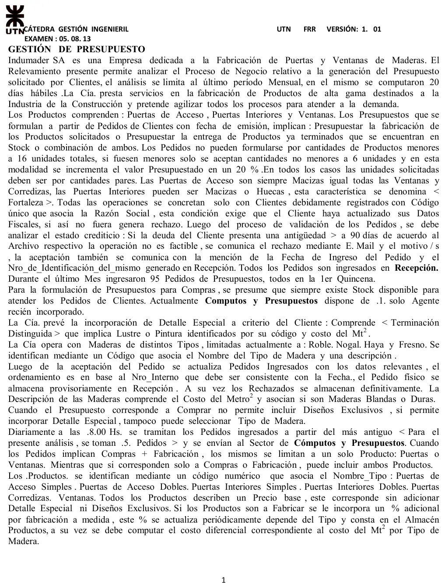
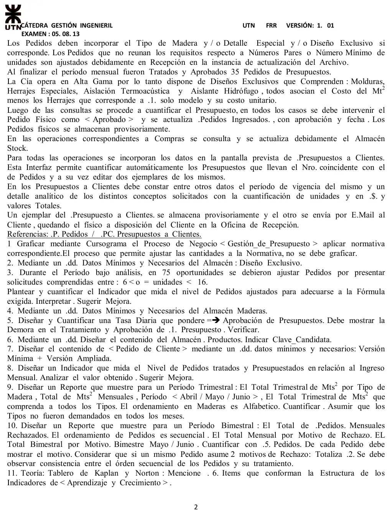

Final, 05/08/2013
Final, 05/08/2013
Enunciado




Propuesta de respuesta
Respuesta no verificada. La propuso Luta Studios con inteligencia artificial y ningún docente la revisó. Puede tener errores.
1. Cursograma
Una columna por sector, con los símbolos del resumen de un alumno que usa la materia. Los almacenes lógicos van al costado con flecha punteada, que apunta al almacén si lo actualiza y a la operación si lo consulta. Los e-mails también van punteados. El ajuste de cantidades a la normativa no está, porque la consigna pide no graficarlo. Tocá el dibujo para verlo en pantalla completa.
2. DD del almacén Diseño Exclusivo
Diseno_Exclusivo = cod_diseno + tipo(d) + descripcion + (costo_m2)
+ (modelo_herraje) + (costo_unitario)
tipo(d) = <molduras | herrajes especiales | aislación termoacústica
| aislante hidrófugo>Los herrajes tienen un solo modelo con su costo unitario. Los otros tres van por metro cuadrado. Por eso cada costo va entre paréntesis, según el tipo.
3. Indicador de pedidos ajustados
Casi cuatro de cada cinco pedidos llegan con 6 a 15 unidades y Recepción tiene que ajustarlos. El cliente no conoce la regla antes de pedir.
Mejora. Informar la regla en el mismo pedido, con el mínimo de 16 unidades, las cantidades pares y el recargo del 20 % entre 6 y 15, y validarla al cargar el pedido. Así el ajuste deja de ser trabajo de Recepción.
4. DD del almacén Maderas
Maderas = cod_madera + nombre_tipo(d) + descripcion + costo_m2
+ dureza(d)
nombre_tipo(d) = <Roble | Nogal | Haya | Fresno>
dureza(d) = <blanda | dura>5. Tasa diaria de aprobación de presupuestos
Verificación. , los aprobados del mes. Cada presupuesto lleva más de medio día hábil del único agente. Cómputos recibe 5 pedidos por día y aprueba menos de 2, así que la diferencia se acumula.
6. DD del almacén Productos
Productos = cod_producto + nombre_tipo(d) + precio_base
+ porc_fabricacion
nombre_tipo(d) = <Puertas de Acceso Simples | Puertas de Acceso Dobles
| Puertas Interiores Simples | Puertas Interiores Dobles
| Puertas Corredizas | Ventanas>Clave candidata. cod_producto, porque cada código asocia un solo tipo. También nombre_tipo, porque hay un producto por tipo y no se repite. Va cod_producto como clave primaria, porque es corto y no cambia si se renombra un tipo. La fortaleza no va acá, porque en las puertas interiores la elige el cliente en el pedido.
7. DD del pedido de cliente
Versión mínima.
Pedido = nro_pedido + fecha_emision + cod_cliente + producto(e)
producto(e) = cod_producto + cantidad + modalidad(d)
modalidad(d) = <compra | fabricación>Versión ampliada.
Pedido = nro_pedido + fecha_emision + cod_cliente + razon_social
+ producto(e) + (nro_interno) + (fecha_ingreso) + estado(d)
+ (motivo_rechazo) + (fecha_aprobacion)
producto(e) = cod_producto + cantidad + modalidad(d) + (fortaleza(d))
+ (cod_madera) + (cod_detalle_especial) + (cod_diseno)
fortaleza(d) = <maciza | hueca>
estado(d) = <ingresado | rechazado | aprobado>producto(e) se repite por cada producto del pedido. Si es compra y fabricación va uno solo. La compra no admite diseños exclusivos ni tipo de madera, y por eso esos datos son opcionales. El número interno, el motivo y la aprobación los completa la empresa.
8. Pedidos presupuestados contra el ingreso mensual
Se presupuesta poco más de un tercio de lo que entra. Los 95 pedidos llegan en la primera quincena y Cómputos tiene un solo agente, recién incorporado, que aprueba 1.75 por día según la consigna 5.
Mejora. Sumar un agente o capacitar al que está, y aprovechar que la pantalla cuantifica sola. Si los pedidos llegan juntos, conviene avisarle al cliente una fecha de presupuesto realista.
9. Reporte trimestral de metros cuadrados por madera
Metros cuadrados por tipo de madera. Abril a junio
| Madera | Abril | Mayo | Junio | Total trimestral |
|---|---|---|---|---|
| Fresno | 120 | 0 | 85 | 205 |
| Haya | 60 | 140 | 0 | 200 |
| Nogal | 0 | 95 | 110 | 205 |
| Roble | 210 | 180 | 150 | 540 |
| Total mensual | 390 | 415 | 345 | 1150 |
Maderas en orden alfabético. Los valores son de ejemplo, con meses en cero para los tipos que no se pidieron. La última columna es el total trimestral de cada tipo y la última fila, el total de cada mes. Abajo a la derecha queda el total trimestral de todos los tipos.
10. Reporte bimestral de pedidos rechazados
Pedidos rechazados. Mayo y junio
| Mes | Pedido | Ingreso | Motivo |
|---|---|---|---|
| Mayo | 1012 | 03/05 | Deuda de más de 90 días |
| Mayo | 1018 | 09/05 | Datos fiscales sin actualizar y deuda de más de 90 días |
| Junio | 1031 | 02/06 | Cliente no registrado |
| Junio | 1037 | 07/06 | Deuda de más de 90 días |
| Junio | 1040 | 13/06 | Datos fiscales sin actualizar |
| Motivo | Mayo | Junio | Bimestre |
|---|---|---|---|
| Cliente no registrado | 0 | 1 | 1 |
| Datos fiscales sin actualizar | 1 | 1 | 2 |
| Deuda de más de 90 días | 2 | 1 | 3 |
| Total de motivos | 3 | 3 | 6 |
| Pedidos rechazados | 2 | 3 | 5 |
Los cinco pedidos van en orden secuencial y las fechas crecen con el número, que es la consistencia que pide la consigna. Todos llegan en la primera quincena, como dice la narrativa. El 1018 tiene dos motivos y suma 2 en los totales por motivo, pero es un solo pedido rechazado. Por eso hay 6 motivos y 5 pedidos. Los números y las fechas son de ejemplo.
11. Teoría. Estructura de los indicadores de aprendizaje y crecimiento

- Competencias del personal.
- Infraestructura tecnológica.
- Clima laboral.
- Satisfacción del empleado.
- Retención del personal.
- Productividad del empleado.
Son los de la figura 6.1 de El Cuadro de Mando Integral, de Kaplan y Norton, página 142. Los tres primeros son los medios, y los otros tres el núcleo de indicadores clave. La satisfacción del empleado es el inductor de la retención y la productividad.
Respuesta no verificada. Puede tener errores.
Se armó con las páginas del parcial y del final, secciones Cursograma, Diccionario de datos, Reportes, Indicadores de gestión y Aprendizaje y crecimiento.
Quedó en duda: La narrativa llama «Archivo respectivo» al de las deudas, y acá se lo nombra Cuentas de clientes. Tampoco dice en qué orden van los dos controles de Recepción, ni si un pedido rechazado por el primero pasa por el segundo, que es lo que permite los dos motivos de la consigna 10. Se toma que el pedido físico viaja con los 5 que se mandan a Cómputos, porque ahí se lo interviene como aprobado. En la consigna 3 se cuentan como ajustados los 75 que da la consigna, sobre los 95 ingresados. La demora de la consigna 5 sale en días hábiles, porque la narrativa no da horas de trabajo. Los valores de los reportes 9 y 10 son de ejemplo. Los cursogramas y el DD salen de material de alumnos, porque el Drive no tiene el apunte de la cátedra.
¿Cómo te fue?
Marcá cada tema del examen.
- CursogramaCursograma, en Parcial de aprobación directa
- DDCómo viene el examen, en Parcial de aprobación directa
- IndicadoresIndicadores de gestión, en Parcial de aprobación directa
- ReportesReportes, en Parcial de aprobación directa
- Cuadro de MandoCuadro de Mando Integral, en Parcial de aprobación directa